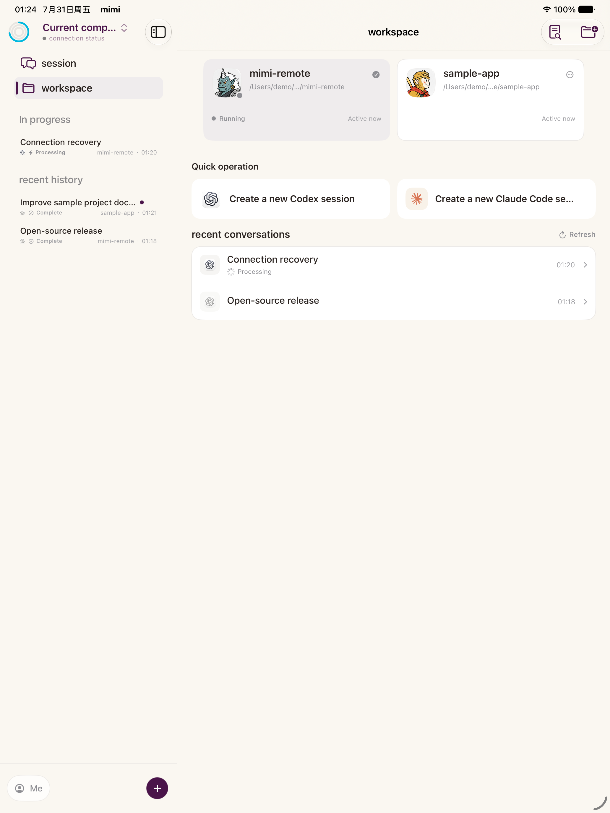
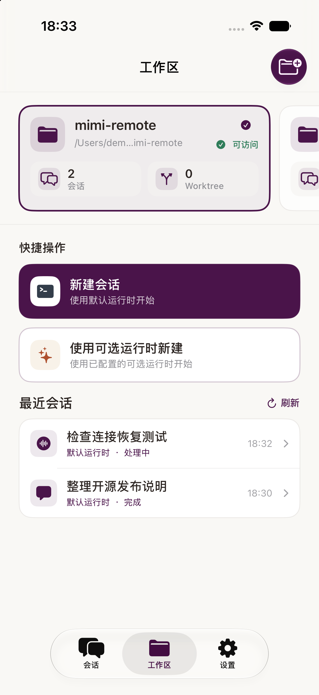
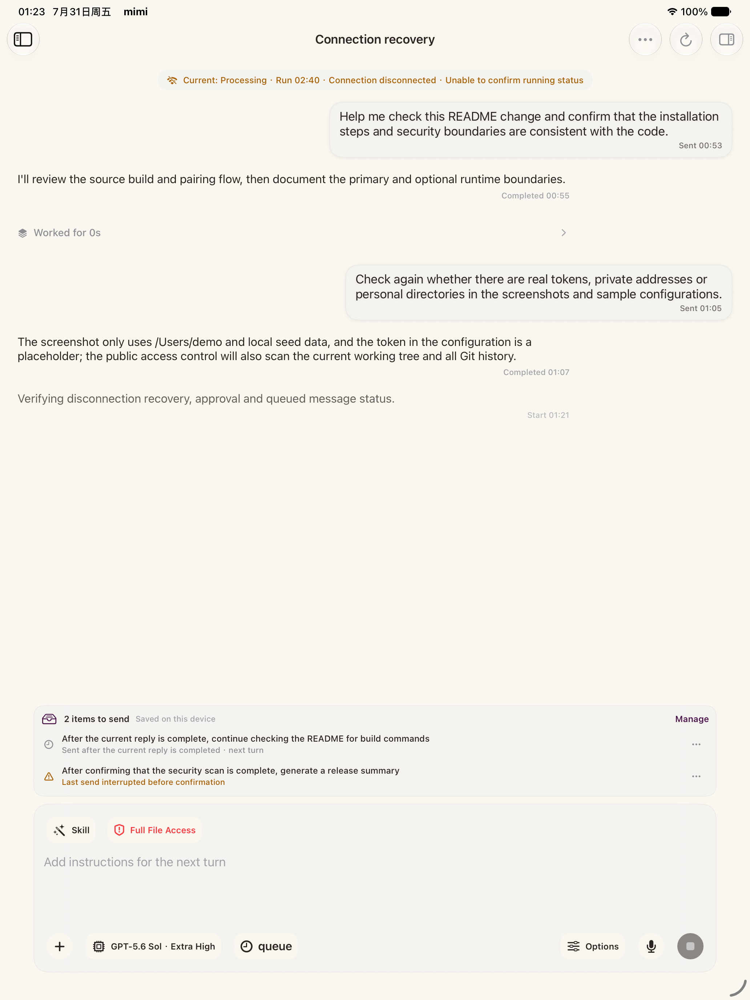
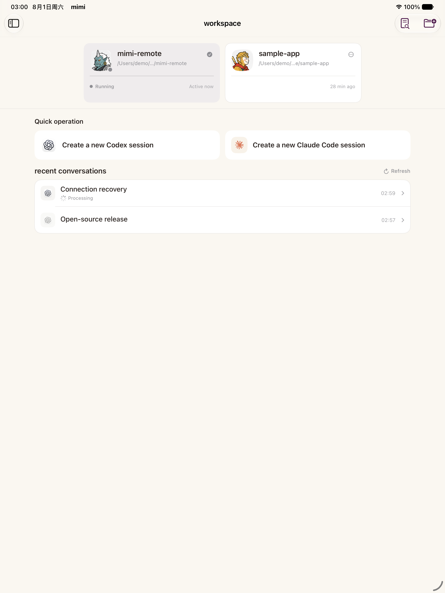

Coding agents, on the go
Your agents.
Within reach.
Purpose-built for iPhone and iPad, with Codex and Claude Code continuing to run on your Mac.


Built to feel local, everywhere.
-
Fast.
Local-first execution on your own Mac. Responses arrive without a cloud round-trip.
-
Stable.
Connections recover on their own. Queued messages and status stay intact across drops.
-
Multi‑device.
iPad, iPhone, and Mac share one workflow—pick up a session wherever you are.
-
Native for iPhone and iPad.
Designed for compact iPhone navigation and wide iPad workspaces—not one layout stretched across both.
One client. Two runtimes.
Mimi Remote talks to the agents you already run. Your Mac keeps the session alive; every device is just a window onto it.
The details, from the real app.
Recover without losing the thread.
When the link drops, nothing is lost. Unsent instructions wait in a local queue, saved on the device, and re-send the moment the connection returns.

Built around iPad.
A real sidebar, not a hamburger afterthought. Sessions and workspaces sit side by side, with in-progress and recent history always one glance away.
Every workspace gets a face.
Personalized icons make projects recognizable at a glance, and a Codex or Claude Code session is always one tap away.
